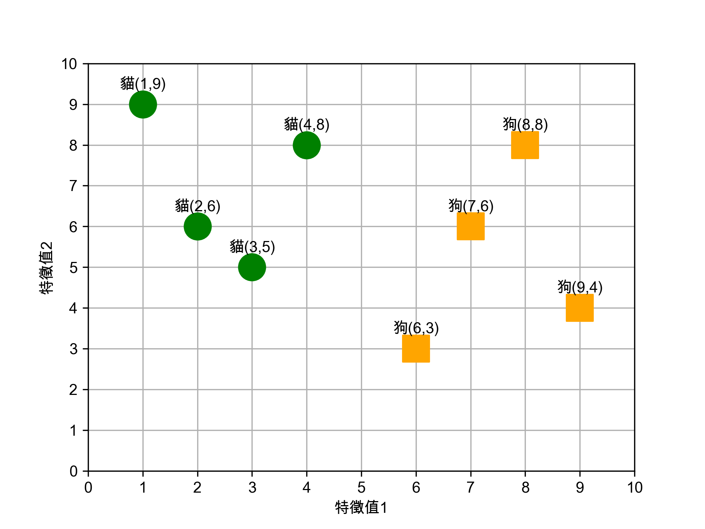
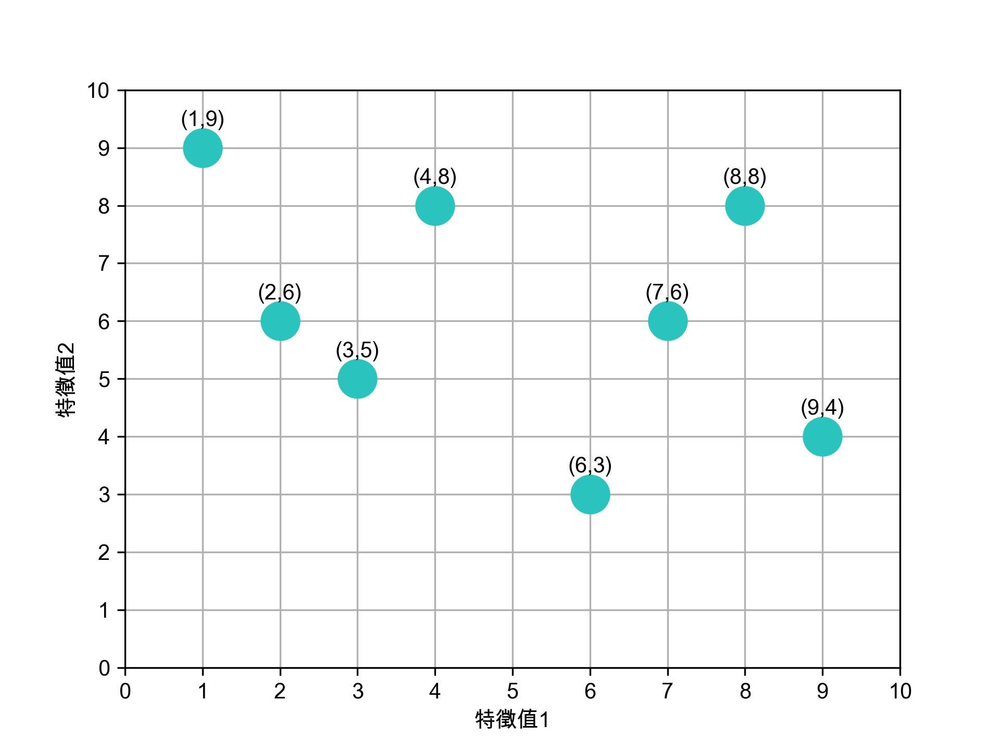
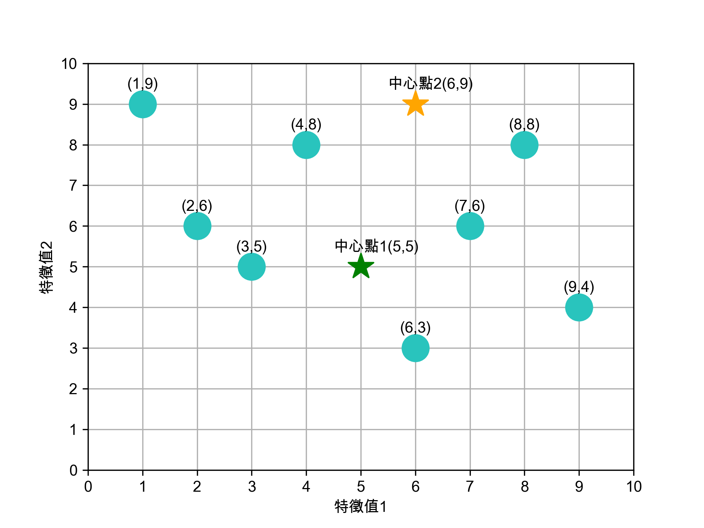
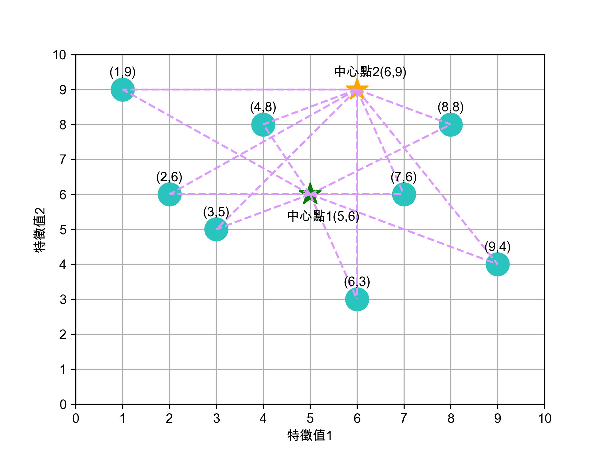

台科大教科書編修記錄
1. 國家教育研究院教科書審查意見表
2. 任務

Figure 1: 負責章節
Figure 2: 章節內容
3. 課綱要求
3.1. 系統平台(S)
- 資 S-V-1 系統平台之運作原理。
- 資 S-V-2 系統平台之未來發展趨勢。
3.2. 資料表示、處理及分析(D)
- 資 D-V-1 巨量資料的概念。
- 資 D-V-2 資料探勘與機器學習的基本概念。
4. 系統平台
在這個3C用品泛濫的世界，人手一部手機，坐下來就面對電腦，然而我們所極度依賴或沉迷的其實不是3C用品本身，而是其上的應用軟體（App）。而軟體之所以能在手機或電腦上運作，其實是系統平台提供了執行環境，此處的系統平台包括電腦硬體（hardware）、也包括管理這些硬體資源的作業系統（Operating System, OS）。
4.1. 系統平台的發展歷史
- 系統平台的濫觴
1945年，一位程式設計師捧著一叠打孔紙卡來到一部IBM讀卡機前，她（是的，當時所謂的程式設計師多是女生）的身後是一部重達30噸、佔地167平方公尺、運行耗電160千瓦、傳說中一旦開機會導致費城限電的龐大機器。為了這次的展示，一些工作人員已事先忙碌數天，拿著手冊調整上千個開關與線路，以便執行打孔紙卡裡的程式。
在這次的展示中，這部耗資近五十萬美元（相當於2020年的720萬美元)花了20秒計算出一顆飛行時間30秒的砲彈彈道，而同樣的工作需要一位計算員（computer，是的，這就是這個單字最早的意思，而她們也幾乎清一色是女性）以桌上型計算器努力工作兩天。這台龐然大物就是號稱史上第一台通用型電腦的ENIAC（The Electronic Numerical Intergrator and Computer）。
Figure 3: 正在調整ENIAC設定的幾位程式設計師
在上述石器時代的電腦史，我們看到了一套極無效率的系統平台，要運算的數據以打孔卡片的型式儲存，而所謂的程式即是工作人員在ENIAC實際運算前對其所進行的繁雜硬體開關與線路設定，這導致ENIAC每次只能執行一支程式，而且要執行不同程式就必須要再對機器重新做一次設定，至於執行結果也只能以燈號顯示1, 2而非儲存在電腦中。對於一部造價如此高昂的機器，這無疑是一種令人心寒的浪費；而造成ENIAC如此困境的原因之一是它沒有儲存裝置、沒有記憶體、也沒有硬碟。
Video: 1946 ENIAC Computer History Remastered FULL VERSION First Large Digital Electronic Computer
- 馮紐曼架構
在受邀參觀完ENIAC後，馮紐曼（John Von Neumann）一方面驚訝於其運算速度，也覺得這種程式設計方式太過複雜，1945年6月，這位八歲會算微積分、未滿30歲就與愛因斯坦等人並列普林斯頓高等研究院創院的四大老之一的天才在火車上草擬了《EDVAC 報告初稿》（First Draft of a Report on the EDVAC）3。他在這份文件中提出了兩項影響日後所有電腦發展的建議：
- 以二進位取代十進位元來運算和儲存資料。
- 將電腦的設計架構分為運算單元、控制單元、記憶單元，輸入裝置與輸出裝置五大單元，此架構也被後世稱為馮紐曼架構。

Figure 4: 馮紐曼提出的電腦架構。圖：WIKI

Figure 5: 影響深遠的〈EDVAC 報告初稿〉封面。圖：WIKI
在馮紐曼架構的規範下，程式的執行不再像ENIAC那樣以硬體線路與開關進行設定，而是如同像ENIAC儲存運算數據般也存在打孔卡片上，程式要先由讀卡機讀入記憶體，要執行時再由控制單元到記憶體中讀出來執行，此即「內儲程式電腦」（Stored Program Computer）。1951 年，美國軍方根據這份報告、在馮紐曼的協助下，斥資五十萬美元打造了計算機「EDVAC」（Electronic Discrete Variable Automatic Computer）。此時的系統平台已然可輸入不同程式，進而執行產生不同的結果。
- 以二進位取代十進位元來運算和儲存資料。
- 從批次執行到分時系統
如本章前言所述，系統平台包含電腦硬體與作業系統，提供應用程式執行所需的環境 。而作業系統存在的目的就在於協助應用程式在電腦上執行，為此，作業系統必須監控管理電腦的硬體資源，包括記體體、儲存裝置與輸入輸出裝置。第一個具備這些功能雛型的作業系統為IBM 704電腦的GM-NAA I/O（input/output system of General Motors and North American Aviation），GH-NAA IO開發於1956年，它可以批次對不同應用程式做載入、執行、輸出結果，由於每次只能執行一支程式，所以程式必須排隊等待執行中的程式結束，這便是所謂的批次處理系統（batch processing）。
同年，UNIVAC的作業系統引入了中斷（interrupt）技術，成為日後分時共享（time-sharing）系統的先驅。此前，系統平台的記憶體只能載入一支程式，即使這支系統正在列印大量資料，也要等全部資料列印完畢才能載入下一支程式進來執行。而中斷技術則允許系統平台載入多個程式，當一支程式正在進行輸入/輸出動作時，該程式就會被中斷，此時第二支程式就可立刻被執行，從而大幅提高硬體的執行效能。
註：這裡的中斷（interrupt）並不是停止的意思， 而是「程序的狀態進入中斷狀態，CPU 不會理會該程序」。
此後，隨著記憶體技術由磁鼓（Drum memory）、磁芯（magnetic core）進步至半導體，儲存裝置由循序存取的磁帶（tape）進步至隨機存取的磁碟（disk）、作業系統使用介面（User Interface, UI）由文字命令模式進步到圖形使用者介面（Graphical User Interface, GUI），系統平台也隨之一路進化至今。
4.3. 參考資料
- CPU演進
- 執行緒
- CPU的核心數與執行緒數有什麼區別: 很清楚
- CPU的核心數與執行緒數有什麼區別: 很清楚
- 顯示器
- 硬碟
- 軟碟
- 記憶體
- 驅動程式
- 作業系統
- 作業系統歷史年表
- 作業系統發展史
- Timeline of Computer History
- The History of the Operating System – From paper tape to Red Hat OpenShift
- Android
- Computer history cheatsheet: from vacuum tubes to smartphones
- 最新計概-OS
- 什麼是批處理操作系統？
- Batch Processing
- 批次處理任務
- Batch Operating System
- What is Batch Processing Operating System?
- Man working on IBM 360 terminal
- Corestore Collection - IBM System/36 5360
- IBM System i (aka AS / 400)
- 大型主機、專屬系統的現在與未來
- Mainframe
- 批量處理
- Early Timesharing
- 分時系統的發展
- 早期分時
- Computer history cheatsheet: from vacuum tubes to smartphones
- C語言和Unix的發明史
- UNIX怎麼來的？
- Ken Thompson
- B語言
- UNIX之父——一個上帝視角的存在
- 科技典故
- 你需要了解作業系統發展歷程
- 程式設計師盤點：從開發 Unix 系統到成為飛行員！他度過了光輝的人生
- Mac誕生30周年 人類資訊時代的演變史
- 全錄 PARC-「視窗、滑鼠、物件導向」背後的英雄人物誕生地
- Steve Jobs, the Xerox Alto, and computer typography
- Xerox Alto
- 第一款配有滑鼠的商業電腦「Xerox Star」上市
- UNIX
- 作業系統歷史年表
4.4. 電腦類型
4.5. 系統平台的運作
- What is CMOS and BIOS in depth ?
- BIOS
- 什麼是BIOS
- 即將換掉傳統 BIOS 的 UEFI，你懂了嗎 @ 阿瑋師的分享 痞客邦.html
- Day05 開機流程中的BIOS跟UEFI開機檢測程式
- UEFI vs BIOS：有什麼差異以及哪一個更好
- 即將換掉傳統 BIOS 的 UEFI，你懂了嗎
- (Other)UEFI? BIOS? Legacy? 淺談主機板UEFI觀念與迷思(轉錄)
- 漲知識！告訴你什麼是電腦的BIOS和CMOS?
- 電腦開機流程
- 開機流程簡介
- 啟動程式
- 【干货】BIOS、UEFI、MBR、GPT、GRUB 到底是什么意思？
- 磁碟分割MBR、GPT是什麼？
- 電腦開機的過程(轉)
- 開關機流程與 loader
- 第二十章、開機流程、模組管理與 Loader - for CentOS 5.x
- What is CMOS and BIOS in depth ?
- Difference between BIOS and CMOS
- 电脑的CMOS在哪个地方？
- 詳細解說 BIOS 與 CMOS
- 硬碟分區、重裝系統，選MBR還是GPT格式，有講究
- 如何初始化磁碟，且選擇MBR還是GPT?
- MVS (or z/OS) console operations - M53
- z/OSMF Operator Console Tutorial
- How to get a Mainframe access
- 搭建一個屬於自己的Mainframe 之 windows運行篇
4.6. scheduling
4.7. 記憶體管理
- 08. 記憶體管理策略 (Memory Management Strategies)
- 大廠面試愛問的「排程演算法」，20 張圖一舉拿下
- Operating-System Structures
- 作業系統——記憶體管理學習筆記
- Modern Operating System
- What’s the difference between “virtual memory” and “swap space”?
- Linux 交換空間 swap space
- OS - Ch9 虛擬記憶體 Virtual Memory
- 分頁錯誤
- What is virtual memory?
- Cache algorithm (the difference between FIFO, LRU, and LFU)
- CH8 記憶體管理 (Memory Management Strategies)
- 大廠面試愛問的「排程演算法」，20 張圖一舉拿下
- CH9 虛擬記憶體管理 (Virtual-Memory Management)
- Operating-System Structures
- 分頁表
4.8. 網路路由
4.9. 系統平台的未來
- Virtualization
- 分散式系統 v.s. 雲端運算
- Day 1 - 分散式系統筆記
- 實現雲端運算的關鍵基礎：虛擬機 (Virtual Machine)
- 雲端運算與虛擬化技術
- 雲計算與虛擬化有什麼區別
- 認識大數據的黃色小象幫手 –– Hadoop
- 兩種不同的動態路由RIP與OSPF協議原理解析及比較
- 第 06 章 - 計算機概論 - 作業系統概論
- 認識大數據的黃色小象幫手 –– Hadoop
- Spark：一個高效的分散式計算系統
- Hadoop内部原理：分布式系统如何实现？存储、计算和调度
- 為何會有分散式架構的出現？ AWS GCP Azure Alibaba 入門|介紹|程式|教學|教程: 很清楚
- 【CloudMile 科技情報站 EP.2】雲端淺談：公有雲、混合雲、私有雲？徹底了解 IAAS, SAAS, PAAS: 很清楚
- 淺談雲端運算: PDF
- 雲端運算：IBM
- 高有效性簡介30篇: 群組運算 (5)
- 雲端計算與分散式概述
- 雲端運算興起 資訊業戰火再啟
- 分散式和叢集區別？什麼是雲端計算平臺？分散式的應用場景？
- 徹底了解Cloud Computing｜由來篇
- 有哪些通俗易懂的例子可以解釋 IaaS、PaaS、SaaS 的區別？
- 熬夜做出「口罩地圖」！這群用鍵盤救國的熱血工程師：就算只能幫大家節省１０分鐘，我也要寫
- 熬夜做出「口罩地圖」！這群用鍵盤救國的熱血工程師：就算只能幫大家節省１０分鐘，我也要寫
- 徹底了解Cloud Computing｜服務型式篇
- 徹底了解Cloud Computing｜IaaS（Infrastructure as a Service）
- 徹底了解Cloud Computing｜PaaS（Platform as a Service）
- 徹底了解Cloud Computing｜SaaS（Software as a Service）
- 徹底了解Cloud Computing｜部署模式
- 徹底了解Cloud Computing｜關鍵技術
- 徹底了解Cloud Computing｜安全挑戰
- 徹底了解Cloud Computing｜對產業的影響
- 全球較知名的IaaS、PaaS雲端服務廠商總列表(2011年10月整理)
- 電腦叢集
- 網格計算
- 一文詳解分散式系統
- 雲端計算與分散式概述
- 分散式運算
- 技術觀念 | 淺談分散式系統 - 什麼是分散式系統
- Hadoop 簡史：黃色小象的由來
- Day 1 - 分散式系統筆記
- 物聯網
- The little-known story of the first IoT device
- Internet of Things statistics for 2021 – Taking Things Apart
- 全球物聯網裝置數量增長9%，達到123億
- The Ultimate List of Internet of Things Statistics for 2022
- [Day 1] 物聯網，一段歷史
- The First IoT Device*
- 一文讀懂 IoT Gateway 設計
- ZigBee
- Z-Wave
- Beginners Guide to IoT
- Day13 - 物聯網介紹
- 何謂物聯網（IoT）
- IoT物聯網 – 定義、應用領域、以及產業實際案例
- 何謂工業 4.0？
- 物聯網
- 邊緣運算
- 邊緣計算(Edge computing)的用例和物聯網 (IoT)
- 何謂邊緣運算？
- 何謂邊緣運算？
- 邊緣運算三大企業應用關鍵，緊繫雲端、工業物聯網、5G
- 什麼是邊緣運算(Edge Computing)?
- 物聯網架構的4個階段，如何引導數據往返於設備和數據中心
- 您必須了解的15個標準物聯網協議
- 物聯網，是什麼？Internet Of Things
- 物聯網加穿戴裝置願景
- 【IBM 雲講堂】第二集：實踐 DevOps 交付雲原生應用
- 物聯網架構的4個階段，如何引導數據往返於設備和數據中心
- What is an IoT Gateway?
- 物聯網是什麼意思？生活上有什麼應用例子？
- 物聯網最主要的三種層面，特徵及優缺點
- 物聯網的發展可以分為哪四個階段？
- The little-known story of the first IoT device
- 元宇宙
- 元宇宙懶人包」元宇宙是什麼？為何臉書搶進投資？對生活有什麼改變一次看
- 黃哲斌：五部電影看懂神祕「元宇宙」
- Video: Facebook gives a glimpse of metaverse, its planned virtual reality world
- 虛擬實境VR
- 智慧工廠的VR_AR_MR應用
- 四種實境 - VR、AR、SR、MR @
- 從「元宇宙」興起看 XR 技術如何實現虛擬新世界
- xR、AR、VR 與 MR：在實境上的區別
- 元宇宙的基礎能源竟然是它？
- 全面分析元宇宙特點、應用場景與價值潛力
- 區塊鏈、NFT和元宇宙：融合的技術與虛無縹緲的未來
- 元宇宙︱創世紀：技術基礎與驅動因素
- 火紅元宇宙 未來商機無限！
- 何謂元宇宙?
- 元宇宙
- 大家一直在講「元宇宙」，那到底怎麼進去？門票哪裏買？
- 元宇宙懶人包」元宇宙是什麼？為何臉書搶進投資？對生活有什麼改變一次看
5. 資料表示、處理及分析
5.1. code for showing 不同編碼
電腦的發明以來雖然解決了我們生活中大小事務，然而其本質工作始終只有一個：處理資料。而所謂資料處理（Data Processing）涉及兩個最基本的問題：
- 如何儲存資料？
如何對資料進行運算？
1: # -*- coding: utf-8 -*- 2: cstring = u'資訊科技ABC' 3: 4: for x in cstring: 5: big5Code = str(x.encode('big5','ignore'))[2:-1].replace(r'\x','').zfill(4).upper() 6: hexCode = str(hex(ord(x))[2:]).upper() 7: binCode = str(bin(ord(x))[2:].zfill(16)) 8: binCode = " ".join([binCode[::-1][i:i+8] for i in range(0, len(binCode), 8)])[::-1] 9: print('{0:2}\tbig5: {1:4}\tUnicode: {2:4} ({3})'.format(x, big5Code, hexCode, binCode)) 10:
資 big5: B8EA Unicode: 8CC7 (10001100 11000111) 訊 big5: 0B0T Unicode: 8A0A (10001010 00001010) 科 big5: ACEC Unicode: 79D1 (01111001 11010001) 技 big5: A7DE Unicode: 6280 (01100010 10000000) A big5: 000A Unicode: 41 (00000000 01000001) B big5: 000B Unicode: 42 (00000000 01000010) C big5: 000C Unicode: 43 (00000000 01000011)
5.2. 資料表示與資料處理
5.3. 巨量資料
- 巨量資料
- How Much Data Is Created Every Day in 2021?
- 大數據簡史
- 大數據從何而來？
- 什麼是大數據？
- 10分鐘弄懂大數據框架Hadoop和Spark的差異
- 數量、速度、多樣性、準確性和價值是使大數據成為一項巨大業務的五個關鍵。
- PowerBI
- FineReport
- 6大類14款資料視覺化工具，學會其中2個就夠了！
- 【大數據分析懶人包】
- 解析｜大數據公司挖掘數據價值的49個典型案例（值得收藏）
- 生活中大數據分析案例
- 六個資料分析成功案例完全解密
- 大數據是什麼？從零開始，認識大數據定義、分析與工具
- 約翰·馬希
- The Origins of Big Data
- The 5 V’s of big data
- 大數據是什麼？從零開始，認識大數據定義、分析與工具
- How big is Youtube storage, how many tera are uploaded daily, and how can they Dimension such system?
- Bigtable
- 大數據的5v特點ibm提出包括
- 大數據的5V
- The five V’s of big data
- 每天創建多少數據？[27個驚人的統計數據]
- How big is Youtube storage, how many tera are uploaded daily, and how can they Dimension such system?
- Facebook 的數據有多大？每天攝取 25 億條內容和超過 500 TB 的數據
- Google 數據庫：Google 服務如何存儲 PB-Exabyte 規模的數據？
- 你還不懂大數據嗎？先來閱讀這篇：「一次搞懂大數據」GOOD
- 巨量資料的時代，用「大、快、雜、疑」四字箴言帶你認識大數據
- 八秒定律
- 空汙紫爆有多紫？讓「巨量資料視覺化」告訴你
- 巨量資料分析來助力 降低空污對人體的危害
- 在你下單前就出貨！Amazon用大數據鞏固電商龍頭
- 科技新寵兒–巨量資料分析
- 雲端儲存（三）：把資料拆開放?雲端分散式儲存系統: HDFS
- https://www.internetlivestats.com/ 網路即時統計資訊，有用
- 雲端儲存（六）：從資料雲海看穿你的心！雲端與海量資料分析：有許多應用範例
- 巨量資料協助預防疲勞駕駛
- 大數據簡史
- 大數據：任何人都可以使用的 33 個出色且免費的數據源
- Add a Node to a Live Hadoop Cluster in 15 Minutes - YouTube
- 數據挖掘中的數據預處理
- 資料探勘-資料預處理模組
- 5 個最佳數據處理框架
- Apache Spark 簡介
- 資料探勘
- How do you define Data Science?
- [採訪]了解數據科學在工業中的作用
- 資料科學的思考流程
- TED：資料視覺化的美麗
- 數據可視化背後的心理學
- 我最喜歡的工具：關於數據可視化的 Alberto Cairo
- 從數據可視化中獲得更多收益的 5 種方法
- 空汙紫爆有多紫？讓「巨量資料視覺化」告訴你
- 完成數據分析項目的 7 個基本步驟
- 如何管理數據科學項目以實現成功交付
- 大數據分析：工作原理、工具和實際應用
- 6大類14款資料視覺化工具，學會其中2個就夠了！
- 資料視覺化
- 大數據的六大步驟解釋
- 資料科學的思考流程
- Big data 的三種資料分析類型≈
- 數據科學界華山論劍：R與Python巔峰對決
- 大數據專題報導（一）：資料科學如何解決真實世界的問題？認識資料極限，打開分析視野－專訪DSP智庫驅動知識長謝宗震 :統計與資料科學的探討
- 經驗貼:如何進行大資料入門級學習 : 書單參考，學習資料科學必備書單
- 淺談資料探勘與機器學習
- 將機器學習模型轉化為真實產品和服務的經驗教訓: 實務應用的經驗談
- 5 Steps of a Data Science Project Lifecycle OSEMN framework
- 有了模型然後呢？從資料模型到數據產品
- 生活中大數據分析案例
- 產品和服務決策都靠它！便利商店用大數據更貼近你的需求
- 大據怎麼做？唯快不破
- 亞馬遜的大數據之戰！這次它要買下你口袋裡的發票
- 協同過濾
- 大數據最速配送傳說 Amazon設計出「預測式購物」
- 雲端儲存（六）：從資料雲海看穿你的心！雲端與海量資料分析
- 以數據為依據的預測性警務被認為偏見較少。是嗎？
- Data-Informed Predictive Policing Was Heralded As Less Biased. Is It?
- 人工智能現在用於預測犯罪。但它有偏見嗎？
- 生活中大數據分析案例
x- 解析｜大數據公司挖掘數據價值的49個典型案例（值得收藏）
- 大數據應用案例：最會利用數據分析的4個企業
- 巨量資料(Big Data)於銀行業之應用與其成效
- 大數據公司挖掘數據價值的49個典型案例（值得收藏）
- 用大數據和癌症搏鬥，美國新創公司獲58億投資
- 巨量資料機會與挑戰: 淘寶網上線商品約 10億，註冊用戶將近5億，單日流量20億人次，為全球最大的網路購物平台，每天從 1.5 PB 資料中分析出 20 TB 的統計結果
- 巨量資料相關應用的規範省思
- 挺住巨量資料防洩密
- 從史諾登到臉書個資外洩，大數據時代的隱私困境與規範難題
- 張善政沒說的事：大數據、巨量資料平台，然後呢？
5.4. 人工智慧的概念、發展與應用領域
- 何謂人工智慧
- 邁向2030，展望AI科技發展未來藍圖
- 不可思議的大腦－《知識大圖解》:大腦運作原理以及神經形態晶片（neuromorphic chip）
- 感知器(Perception)-ML簡史
- 火爐煉AI」深度學習001-神經網絡的基本單元-感知器
- Neural Networks (一)
- 機器學習的衰頹興盛：從類神經網路到淺層學習
- 新冠肺炎症狀比較表》Delta、Omicron症狀跟感冒怎麼分？
- 人工智能感知器: PDF，介紹Rosenblatt的感知器
- 【二戰解密英雄】破解納粹密碼 人工智慧之父圖靈躍上英鎊50元新鈔
- 人工智能的歷史
- 第五代電腦
- 一場失敗的“AI革命”
- 一文搞懂 CPU、GPU 和 TPU
5.5. 機器學習
- Links
- 淺談資料探勘與機器學習
- 從「機器兒童」到「機器學習」:「學習」的概念是如何變化的?
- 你知道機器學習(Machine Learning)，有幾種學習方式嗎?
- 強化學習(Reinforcement Learning)：入門指南
- 不要再用K-means！ 超實用分群法DBSCAN詳解
- 使用k-means分群的三個缺點
- ML | 群集分析 Clustering 其二
- DBSCAN Clustering in ML | Density based clustering
- 第 14 章 非監督式學習
- 神經網路
- 機器學習的衰頹興盛：從類神經網路到淺層學習
- 人工智慧：如何以電腦解決問題
- 第一次人工智慧泡沫後，研究領域轉為「機器學習」: 非常清楚
- 機器學習跟統計學差在哪？哈佛博士：機器學習重視預測結果，統計學在乎因果推理
- 再過幾年就不需要人類了？AI人工智慧發展比你想像中還廣！
- 資料探勘的技術與應用
- 淺談資料探勘與機器學習
- 監督式學習:最短距離法
- #0
1: import numpy as np 2: import matplotlib.pyplot as plt 3: 4: cats = np.array([[1, 9], [2, 6], [3, 5], [4, 8]]) 5: dogs = np.array([[6, 3], [7, 6], [8, 8], [9, 4]]) 6: cc = cats.mean(axis=0).transpose() 7: dc = dogs.mean(axis=0).transpose() 8: nn = np.array([[5],[6]]) 9: print(cc) 10: print(dc) 11: cats = cats.transpose() 12: dogs = dogs.transpose() 13: plt.rcParams['font.sans-serif'] = ['Arial Unicode MS'] 14: plt.rcParams['axes.unicode_minus'] = False 15: 16: size = 300 17: plt.xlim(0, 10) 18: plt.ylim(0, 10) 19: plt.xticks(np.arange(0, 11, 1)) 20: plt.xlabel('特徵值1') 21: plt.ylabel('特徵值2') 22: plt.yticks(np.arange(0, 11, 1)) 23: 24: #plt.scatter(cats[0], cats[1], 25: # color='green', marker='o', s=size, zorder=2) 26: #plt.scatter(dogs[0], dogs[1], 27: # color='orange', marker='s', s=size, zorder=2) 28: #plt.scatter(cc[0], cc[1], 29: # color='green', marker='*', s=size, zorder=2) 30: #plt.scatter(dc[0], dc[1], 31: # color='orange', marker='*', s=size, zorder=2) 32: #plt.scatter(nn[0], nn[1], 33: # color='red', marker='^', s=size, zorder=2) 34: # 新圖與貓 35: #lx1 = [cc[0], nn[0]] 36: #ly1 = [cc[1], nn[1]] 37: #plt.plot(lx1, ly1, '--', color='green') 38: # 新圖與狗 39: #lx1 = [dc[0], nn[0]] 40: #ly1 = [dc[1], nn[1]] 41: #plt.plot(lx1, ly1, '--', color='orange') 42: #for x,y in zip(cats[0], cats[1]): 43: # label = "貓({0},{1})".format(x,y) 44: # plt.annotate(label, (x,y), textcoords="offset points", xytext=(0,10), ha='center') 45: #for x,y in zip(dogs[0], dogs[1]): 46: # label = "狗({0},{1})".format(x,y) 47: # plt.annotate(label, (x,y), textcoords="offset points", xytext=(0,10), ha='center') 48: ##狗的中心點 49: #x, y = dc[0], dc[1] 50: #label = "中心點({0},{1})".format(x, y) 51: #plt.annotate(label, (x,y), textcoords="offset points", xytext=(30,10), ha='center') 52: ##貓的中心點 53: #x, y = cc[0], cc[1] 54: #label = "中心點({0},{1})".format(x, y) 55: #plt.annotate(label, (x,y), textcoords="offset points", xytext=(10,10), ha='center') 56: ##新圖點 57: #x, y = nn[0][0], nn[1][0] 58: #print(x, y) 59: #label = "？({0},{1})".format(x, y) 60: #plt.annotate(label, (x,y), textcoords="offset points", xytext=(0,10), ha='center') 61: #print(np.sqrt(np.square(nn[0][0]-cc[0])+np.square(nn[1][0]-cc[1]))) 62: #print(np.sqrt(np.square(nn[0][0]-dc[0])+np.square(nn[1][0]-dc[1]))) 63: 64: plt.grid() 65: plt.savefig('images/empty.png', dpi=300)
[2.5 7. ] [7.5 5.25]
Figure 6: Caption
- #1
1: import numpy as np 2: import matplotlib.pyplot as plt 3: 4: cats = np.array([[1, 9], [2, 6], [3, 5], [4, 8]]) 5: dogs = np.array([[6, 3], [7, 6], [8, 8], [9, 4]]) 6: cc = cats.mean(axis=0).transpose() 7: dc = dogs.mean(axis=0).transpose() 8: nn = np.array([[5],[6]]) 9: print(cc) 10: print(dc) 11: cats = cats.transpose() 12: dogs = dogs.transpose() 13: plt.rcParams['font.sans-serif'] = ['Arial Unicode MS'] 14: plt.rcParams['axes.unicode_minus'] = False 15: 16: size = 300 17: plt.xlim(0, 10) 18: plt.ylim(0, 10) 19: plt.xticks(np.arange(0, 11, 1)) 20: plt.xlabel('特徵值1') 21: plt.ylabel('特徵值2') 22: plt.yticks(np.arange(0, 11, 1)) 23: 24: plt.scatter(cats[0], cats[1], 25: color='green', marker='o', s=size, zorder=2) 26: plt.scatter(dogs[0], dogs[1], 27: color='orange', marker='s', s=size, zorder=2) 28: #plt.scatter(cc[0], cc[1], 29: # color='green', marker='*', s=size, zorder=2) 30: #plt.scatter(dc[0], dc[1], 31: # color='orange', marker='*', s=size, zorder=2) 32: #plt.scatter(nn[0], nn[1], 33: # color='red', marker='^', s=size, zorder=2) 34: # 新圖與貓 35: #lx1 = [cc[0], nn[0]] 36: #ly1 = [cc[1], nn[1]] 37: #plt.plot(lx1, ly1, '--', color='green') 38: # 新圖與狗 39: #lx1 = [dc[0], nn[0]] 40: #ly1 = [dc[1], nn[1]] 41: #plt.plot(lx1, ly1, '--', color='orange') 42: for x,y in zip(cats[0], cats[1]): 43: label = "貓({0},{1})".format(x,y) 44: plt.annotate(label, (x,y), textcoords="offset points", xytext=(0,10), ha='center') 45: for x,y in zip(dogs[0], dogs[1]): 46: label = "狗({0},{1})".format(x,y) 47: plt.annotate(label, (x,y), textcoords="offset points", xytext=(0,10), ha='center') 48: ##狗的中心點 49: #x, y = dc[0], dc[1] 50: #label = "中心點({0},{1})".format(x, y) 51: #plt.annotate(label, (x,y), textcoords="offset points", xytext=(30,10), ha='center') 52: ##貓的中心點 53: #x, y = cc[0], cc[1] 54: #label = "中心點({0},{1})".format(x, y) 55: #plt.annotate(label, (x,y), textcoords="offset points", xytext=(10,10), ha='center') 56: ##新圖點 57: #x, y = nn[0][0], nn[1][0] 58: #print(x, y) 59: #label = "？({0},{1})".format(x, y) 60: #plt.annotate(label, (x,y), textcoords="offset points", xytext=(0,10), ha='center') 61: print(np.sqrt(np.square(nn[0][0]-cc[0])+np.square(nn[1][0]-cc[1]))) 62: print(np.sqrt(np.square(nn[0][0]-dc[0])+np.square(nn[1][0]-dc[1]))) 63: 64: plt.grid() 65: plt.savefig('images/sd0.png', dpi=300)
[2.5 7. ] [7.5 5.25] 2.692582403567252 2.6100766272276377

Figure 7: Caption
- #2
1: import numpy as np 2: import matplotlib.pyplot as plt 3: 4: cats = np.array([[1, 9], [2, 6], [3, 5], [4, 8]]) 5: dogs = np.array([[6, 3], [7, 6], [8, 8], [9, 4]]) 6: cc = cats.mean(axis=0).transpose() 7: dc = dogs.mean(axis=0).transpose() 8: nn = np.array([[5],[6]]) 9: print(cc) 10: print(dc) 11: cats = cats.transpose() 12: dogs = dogs.transpose() 13: plt.rcParams['font.sans-serif'] = ['Arial Unicode MS'] 14: plt.rcParams['axes.unicode_minus'] = False 15: 16: size = 300 17: plt.xlim(0, 10) 18: plt.ylim(0, 10) 19: plt.xticks(np.arange(0, 11, 1)) 20: plt.xlabel('特徵值1') 21: plt.ylabel('特徵值2') 22: plt.yticks(np.arange(0, 11, 1)) 23: 24: plt.scatter(cats[0], cats[1], 25: color='green', marker='o', s=size, zorder=2) 26: plt.scatter(dogs[0], dogs[1], 27: color='orange', marker='s', s=size, zorder=2) 28: plt.scatter(cc[0], cc[1], 29: color='green', marker='*', s=size, zorder=2) 30: plt.scatter(dc[0], dc[1], 31: color='orange', marker='*', s=size, zorder=2) 32: plt.scatter(nn[0], nn[1], 33: color='red', marker='^', s=size, zorder=2) 34: # 新圖與貓 35: lx1 = [cc[0], nn[0]] 36: ly1 = [cc[1], nn[1]] 37: plt.plot(lx1, ly1, '--', color='green') 38: # 新圖與狗 39: lx1 = [dc[0], nn[0]] 40: ly1 = [dc[1], nn[1]] 41: plt.plot(lx1, ly1, '--', color='orange') 42: for x,y in zip(cats[0], cats[1]): 43: label = "貓({0},{1})".format(x,y) 44: plt.annotate(label, (x,y), textcoords="offset points", xytext=(0,10), ha='center') 45: for x,y in zip(dogs[0], dogs[1]): 46: label = "狗({0},{1})".format(x,y) 47: plt.annotate(label, (x,y), textcoords="offset points", xytext=(0,10), ha='center') 48: #狗的中心點 49: x, y = dc[0], dc[1] 50: label = "中心點({0},{1})".format(x, y) 51: plt.annotate(label, (x,y), textcoords="offset points", xytext=(30,10), ha='center') 52: #貓的中心點 53: x, y = cc[0], cc[1] 54: label = "中心點({0},{1})".format(x, y) 55: plt.annotate(label, (x,y), textcoords="offset points", xytext=(10,10), ha='center') 56: #新圖點 57: x, y = nn[0][0], nn[1][0] 58: print(x, y) 59: label = "？({0},{1})".format(x, y) 60: plt.annotate(label, (x,y), textcoords="offset points", xytext=(0,10), ha='center') 61: print(np.sqrt(np.square(nn[0][0]-cc[0])+np.square(nn[1][0]-cc[1]))) 62: print(np.sqrt(np.square(nn[0][0]-dc[0])+np.square(nn[1][0]-dc[1]))) 63: 64: plt.grid() 65: plt.savefig('images/sd.png', dpi=300)
[2.5 7. ] [7.5 5.25] 5 6 2.692582403567252 2.6100766272276377
Figure 8: Caption
- #0
- 非監督式學習:K-means
- 先算第1次各點離中心點的距離
1: import numpy as np 2: import matplotlib.pyplot as plt 3: 4: ss = np.array([[1, 9], [2, 6], [3, 5], [4, 8],[6, 3], [7, 6], [8, 8], [9, 4]]) 5: c1 = [5, 6] 6: c2 = [6, 9] 7: cx, cy = c1[0], c1[1] 8: print(f'各點離中心點{cx},{cy}的距離') 9: for x,y in ss: 10: print(f'({x},{y}) to ({cx},{cy}): {np.sqrt(np.square(cx-x)+np.square(cy-y)):.2f}') 11: cx, cy = c2[0], c2[1] 12: print(f'各點離中心點{cx},{cy}的距離') 13: for x,y in ss: 14: print(f'({x},{y}) to ({cx},{cy}): {np.sqrt(np.square(cx-x)+np.square(cy-y)):.2f}') 15: ##中心點1 16:
各點離中心點5,6的距離 (1,9) to (5,6): 5.00 (2,6) to (5,6): 3.00 (3,5) to (5,6): 2.24 (4,8) to (5,6): 2.24 (6,3) to (5,6): 3.16 (7,6) to (5,6): 2.00 (8,8) to (5,6): 3.61 (9,4) to (5,6): 4.47 各點離中心點6,9的距離 (1,9) to (6,9): 5.00 (2,6) to (6,9): 5.00 (3,5) to (6,9): 5.00 (4,8) to (6,9): 2.24 (6,3) to (6,9): 6.00 (7,6) to (6,9): 3.16 (8,8) to (6,9): 2.24 (9,4) to (6,9): 5.83
- 1.
1: import numpy as np 2: import matplotlib.pyplot as plt 3: 4: cats = np.array([[1, 9], [2, 6], [3, 5]) 5: dogs = np.array([[4, 8], [6, 3], [7, 6], [8, 8], [9, 4]]) 6: cc = cats.mean(axis=0).transpose() 7: dc = dogs.mean(axis=0).transpose() 8: nn = np.array([[5],[6]]) 9: print(cc) 10: print(dc) 11: cats = cats.transpose() 12: dogs = dogs.transpose() 13: plt.rcParams['font.sans-serif'] = ['Arial Unicode MS'] 14: plt.rcParams['axes.unicode_minus'] = False 15: 16: size = 300 17: plt.xlim(0, 10) 18: plt.ylim(0, 10) 19: plt.xticks(np.arange(0, 11, 1)) 20: plt.xlabel('特徵值1') 21: plt.ylabel('特徵值2') 22: plt.yticks(np.arange(0, 11, 1)) 23: 24: plt.scatter(cats[0], cats[1], 25: color='#29c4bd', marker='o', s=size, zorder=2) 26: plt.scatter(dogs[0], dogs[1], 27: color='#29c4bd', marker='o', s=size, zorder=2) 28: #挑中心點 29: #plt.scatter(cc[0], cc[1], 30: # color='green', marker='*', s=size, zorder=2) 31: #plt.scatter(dc[0], dc[1], 32: # color='orange', marker='*', s=size, zorder=2) 33: 34: # 新圖與貓 35: #lx1 = [cc[0], nn[0]] 36: #ly1 = [cc[1], nn[1]] 37: #plt.plot(lx1, ly1, '--', color='green') 38: # 新圖與狗 39: #lx1 = [dc[0], nn[0]] 40: #ly1 = [dc[1], nn[1]] 41: #plt.plot(lx1, ly1, '--', color='orange') 42: for x,y in zip(cats[0], cats[1]): 43: label = "({0},{1})".format(x,y) 44: plt.annotate(label, (x,y), textcoords="offset points", xytext=(0,10), ha='center') 45: for x,y in zip(dogs[0], dogs[1]): 46: label = "({0},{1})".format(x,y) 47: plt.annotate(label, (x,y), textcoords="offset points", xytext=(0,10), ha='center') 48: ##狗的中心點 49: #x, y = dc[0], dc[1] 50: #label = "中心點({0},{1})".format(x, y) 51: #plt.annotate(label, (x,y), textcoords="offset points", xytext=(10,-20), ha='center') 52: ##貓的中心點 53: #x, y = cc[0], cc[1] 54: #label = "中心點({0},{1})".format(x, y) 55: #plt.annotate(label, (x,y), textcoords="offset points", xytext=(10,-20), ha='center') 56: #新圖點 57: #x, y = nn[0][0], nn[1][0] 58: #print(x, y) 59: #label = "？({0},{1})".format(x, y) 60: #plt.annotate(label, (x,y), textcoords="offset points", xytext=(0,-20), ha='center') 61: #print(np.sqrt(np.square(nn[0][0]-cc[0])+np.square(nn[1][0]-cc[1]))) 62: #print(np.sqrt(np.square(nn[0][0]-dc[0])+np.square(nn[1][0]-dc[1]))) 63: 64: plt.grid() 65: plt.savefig('images/sd1.png', dpi=300)
[2.5 7. ] [7.5 5.25]

Figure 9: Caption
- 2. 先畫中心點
1: import numpy as np 2: import matplotlib.pyplot as plt 3: 4: cats = np.array([[1, 9], [2, 6], [3, 5], [4, 8]]) 5: dogs = np.array([[6, 3], [7, 6], [8, 8], [9, 4]]) 6: c1 = np.array([[5],[5]]) 7: c2 = np.array([[6],[9]]) 8: #nn = np.array([[5],[6]]) 9: print(c1) 10: print(c2) 11: cats = cats.transpose() 12: dogs = dogs.transpose() 13: plt.rcParams['font.sans-serif'] = ['Arial Unicode MS'] 14: plt.rcParams['axes.unicode_minus'] = False 15: 16: size = 300 17: plt.xlim(0, 10) 18: plt.ylim(0, 10) 19: plt.xticks(np.arange(0, 11, 1)) 20: plt.xlabel('特徵值1') 21: plt.ylabel('特徵值2') 22: plt.yticks(np.arange(0, 11, 1)) 23: 24: plt.scatter(cats[0], cats[1], 25: color='#29c4bd', marker='o', s=size, zorder=2) 26: plt.scatter(dogs[0], dogs[1], 27: color='#29c4bd', marker='o', s=size, zorder=2) 28: #挑中心點 29: plt.scatter(c1[0], c1[1], 30: color='green', marker='*', s=size, zorder=2) 31: plt.scatter(c2[0], c2[1], 32: color='orange', marker='*', s=size, zorder=2) 33: 34: # 新圖與貓 35: #lx1 = [cc[0], nn[0]] 36: #ly1 = [cc[1], nn[1]] 37: #plt.plot(lx1, ly1, '--', color='green') 38: # 新圖與狗 39: #lx1 = [dc[0], nn[0]] 40: #ly1 = [dc[1], nn[1]] 41: #plt.plot(lx1, ly1, '--', color='orange') 42: for x,y in zip(cats[0], cats[1]): 43: label = "({0},{1})".format(x,y) 44: plt.annotate(label, (x,y), textcoords="offset points", xytext=(0,10), ha='center') 45: for x,y in zip(dogs[0], dogs[1]): 46: label = "({0},{1})".format(x,y) 47: plt.annotate(label, (x,y), textcoords="offset points", xytext=(0,10), ha='center') 48: ##中心點1 49: x, y = c1[0][0], c1[1][0] 50: label = "中心點1({0},{1})".format(x, y) 51: plt.annotate(label, (x,y), textcoords="offset points", xytext=(10,10), ha='center') 52: ##中心點2 53: x, y = c2[0][0], c2[1][0] 54: label = "中心點2({0},{1})".format(x, y) 55: plt.annotate(label, (x,y), textcoords="offset points", xytext=(10,10), ha='center') 56: #新圖點 57: #x, y = nn[0][0], nn[1][0] 58: #print(x, y) 59: #label = "？({0},{1})".format(x, y) 60: #plt.annotate(label, (x,y), textcoords="offset points", xytext=(0,-20), ha='center') 61: #print(np.sqrt(np.square(nn[0][0]-cc[0])+np.square(nn[1][0]-cc[1]))) 62: #print(np.sqrt(np.square(nn[0][0]-dc[0])+np.square(nn[1][0]-dc[1]))) 63: 64: plt.grid() 65: plt.savefig('images/sd2.png', dpi=300)
[[5] [5]] [[6] [9]]

Figure 10: Caption
- 3.
1: import numpy as np 2: import matplotlib.pyplot as plt 3: 4: cats = np.array([[1, 9], [2, 6], [3, 5], [4, 8]]) 5: dogs = np.array([[6, 3], [7, 6], [8, 8], [9, 4]]) 6: c1 = np.array([[5],[6]]) 7: c2 = np.array([[6],[9]]) 8: 9: #nn = np.array([[5],[6]]) 10: print(c1) 11: print(c2) 12: cats = cats.transpose() 13: dogs = dogs.transpose() 14: plt.rcParams['font.sans-serif'] = ['Arial Unicode MS'] 15: plt.rcParams['axes.unicode_minus'] = False 16: 17: size = 300 18: plt.xlim(0, 10) 19: plt.ylim(0, 10) 20: plt.xticks(np.arange(0, 11, 1)) 21: plt.xlabel('特徵值1') 22: plt.ylabel('特徵值2') 23: plt.yticks(np.arange(0, 11, 1)) 24: 25: plt.scatter(cats[0], cats[1], 26: color='#29c4bd', marker='o', s=size, zorder=2) 27: plt.scatter(dogs[0], dogs[1], 28: color='#29c4bd', marker='o', s=size, zorder=2) 29: #挑中心點 30: plt.scatter(c1[0], c1[1], 31: color='green', marker='*', s=size, zorder=2) 32: plt.scatter(c2[0], c2[1], 33: color='orange', marker='*', s=size, zorder=2) 34: 35: #計算各點與中心點1的歐幾里德，畫線 36: dist1 = [] 37: c1xs, c1ys = np.repeat(c1[0],4), np.repeat(c1[1],4) 38: for cx, cy, x, y in zip(c1xs, c1ys, cats[0], cats[1]): 39: print(cx, cy, x, y) 40: dist1.append(np.sqrt(np.square(cx-x)+np.square(cy-y))) 41: plt.plot([cx, x], [cy, y], '--', color='#dd99ff') 42: dist2 = [] 43: c1xs, c1ys = np.repeat(c1[0],4), np.repeat(c1[1],4) 44: for cx, cy, x, y in zip(c1xs, c1ys, dogs[0], dogs[1]): 45: print(cx, cy, x, y) 46: dist2.append(np.sqrt(np.square(cx-x)+np.square(cy-y))) 47: plt.plot([cx, x], [cy, y], '--', color='#dd99ff') 48: print('計算各點與中心點1的歐幾里德') 49: print('--dist1--') 50: for item in dist1: 51: print("{0:.2f}".format(item)) 52: print('--dist2-----') 53: for item in dist2: 54: print("{0:.2f}".format(item)) 55: 56: #計算各點與中心點2的歐幾里德，畫線 57: dist3 = [] 58: c1xs, c1ys = np.repeat(c2[0],4), np.repeat(c2[1],4) 59: for cx, cy, x, y in zip(c1xs, c1ys, cats[0], cats[1]): 60: print(cx, cy, x, y) 61: dist3.append(np.sqrt(np.square(cx-x)+np.square(cy-y))) 62: plt.plot([cx, x], [cy, y], '--', color='#dd99ff') 63: dist4 = [] 64: c1xs, c1ys = np.repeat(c2[0],4), np.repeat(c2[1],4) 65: for cx, cy, x, y in zip(c1xs, c1ys, dogs[0], dogs[1]): 66: print(cx, cy, x, y) 67: dist4.append(np.sqrt(np.square(cx-x)+np.square(cy-y))) 68: plt.plot([cx, x], [cy, y], '--', color='#dd99ff') 69: print('計算各點與中心點2的歐幾里德') 70: print('--dist3--') 71: for item in dist3: 72: print("{0:.2f}".format(item)) 73: print('--dist4-----') 74: for item in dist4: 75: print("{0:.2f}".format(item)) 76: 77: 78: 79: 80: 81: #print(np.sqrt(np.square(nn[0][0]-cc[0])+np.square(nn[1][0]-cc[1]))) 82: #print(np.sqrt(np.square(nn[0][0]-dc[0])+np.square(nn[1][0]-dc[1]))) 83: # 新圖與貓 84: #lx1 = [cc[0], nn[0]] 85: #ly1 = [cc[1], nn[1]] 86: #plt.plot(lx1, ly1, '--', color='green') 87: # 新圖與狗 88: #lx1 = [dc[0], nn[0]] 89: #ly1 = [dc[1], nn[1]] 90: #plt.plot(lx1, ly1, '--', color='orange') 91: for x,y in zip(cats[0], cats[1]): 92: label = "({0},{1})".format(x,y) 93: plt.annotate(label, (x,y), textcoords="offset points", xytext=(0,10), ha='center') 94: for x,y in zip(dogs[0], dogs[1]): 95: label = "({0},{1})".format(x,y) 96: plt.annotate(label, (x,y), textcoords="offset points", xytext=(0,10), ha='center') 97: ##中心點1 98: x, y = c1[0][0], c1[1][0] 99: label = "中心點1({0},{1})".format(x, y) 100: plt.annotate(label, (x,y), textcoords="offset points", xytext=(10,-20), ha='center') 101: ##中心點2 102: x, y = c2[0][0], c2[1][0] 103: label = "中心點2({0},{1})".format(x, y) 104: plt.annotate(label, (x,y), textcoords="offset points", xytext=(10,10), ha='center') 105: #新圖點 106: #x, y = nn[0][0], nn[1][0] 107: #print(x, y) 108: #label = "？({0},{1})".format(x, y) 109: #plt.annotate(label, (x,y), textcoords="offset points", xytext=(0,-20), ha='center') 110: 111: 112: plt.grid() 113: plt.savefig('images/sd3.png', dpi=300)
[[5] [6]] [[6] [9]] 5 6 1 9 5 6 2 6 5 6 3 5 5 6 4 8 5 6 6 3 5 6 7 6 5 6 8 8 5 6 9 4 計算各點與中心點1的歐幾里德 --dist1-- 5.00 3.00 2.24 2.24 --dist2----- 3.16 2.00 3.61 4.47 6 9 1 9 6 9 2 6 6 9 3 5 6 9 4 8 6 9 6 3 6 9 7 6 6 9 8 8 6 9 9 4 計算各點與中心點2的歐幾里德 --dist3-- 5.00 5.00 5.00 2.24 --dist4----- 6.00 3.16 2.24 5.83

Figure 11: Caption
- 4. 重新計算K個中心點
1: import numpy as np 2: import matplotlib.pyplot as plt 3: 4: green = np.array([[2, 6], [3, 5], [4, 8], [6, 3], [7, 6], [9, 4]]) 5: orange = np.array([[1, 9], [8, 8]]) 6: c1 = green.mean(axis=0).transpose() 7: c2 = orange.mean(axis=0).transpose() 8: #nn = np.array([[5],[6]]) 9: # 新的中心點: 10: print(f'新的中心點(orange): {c2}') 11: print(f'新的中心點(green): {c1}') 12: green = green.transpose() 13: orange = orange.transpose() 14: plt.rcParams['font.sans-serif'] = ['Arial Unicode MS'] 15: plt.rcParams['axes.unicode_minus'] = False 16: plt.grid() 17: size = 300 18: plt.xlim(0, 10) 19: plt.ylim(0, 10) 20: plt.xticks(np.arange(0, 11, 1)) 21: plt.xlabel('特徵值1') 22: plt.ylabel('特徵值2') 23: plt.yticks(np.arange(0, 11, 1)) 24: 25: plt.scatter(green[0], green[1], 26: color='green', marker='o', s=size, zorder=2) 27: plt.scatter(orange[0], orange[1], 28: color='orange', marker='o', s=size, zorder=2) 29: #挑中心點 30: plt.scatter(c1[0], c1[1], 31: color='green', marker='*', s=size, zorder=2) 32: plt.scatter(c2[0], c2[1], 33: color='orange', marker='*', s=size, zorder=2) 34: 35: #計算各點與中心點1的歐幾里德，畫線 36: dist1 = [] 37: c1xs, c1ys = np.repeat(c1[0],6), np.repeat(c1[1],6) 38: for cx, cy, x, y in zip(c1xs, c1ys, green[0], green[1]): 39: print(cx, cy, x, y) 40: dist1.append(np.sqrt(np.square(cx-x)+np.square(cy-y))) 41: plt.plot([cx, x], [cy, y], '--', color='#88cf9a') 42: dist2 = [] 43: c1xs, c1ys = np.repeat(c1[0],2), np.repeat(c1[1],2) 44: for cx, cy, x, y in zip(c1xs, c1ys, orange[0], orange[1]): 45: print(cx, cy, x, y) 46: dist2.append(np.sqrt(np.square(cx-x)+np.square(cy-y))) 47: plt.plot([cx, x], [cy, y], '--', color='#88cf9a') 48: 49: print('--dist1--') 50: for item in dist1: 51: print("{0:.2f}".format(item)) 52: print('--dist2-----') 53: for item in dist2: 54: print("{0:.2f}".format(item)) 55: 56: #計算各點與中心點2(orange)的歐幾里德，畫線 57: dist3 = [] 58: c1xs, c1ys = np.repeat(c2[0],6), np.repeat(c2[1],6) 59: print('===Green點====') 60: print(green) 61: print(green[0]) 62: print(green[1]) 63: for cx, cy, x, y in zip(c1xs, c1ys, green[0], green[1]): 64: print(cx, cy, x, y) 65: dist3.append(np.sqrt(np.square(cx-x)+np.square(cy-y))) 66: #plt.plot([cx, x], [cy, y], '--', color='#e8c495') 67: dist4 = [] 68: c1xs, c1ys = np.repeat(c2[0],2), np.repeat(c2[1],2) 69: for cx, cy, x, y in zip(c1xs, c1ys, orange[0], orange[1]): 70: print(cx, cy, x, y) 71: dist4.append(np.sqrt(np.square(cx-x)+np.square(cy-y))) 72: #plt.plot([cx, x], [cy, y], '--', color='#e8c495') 73: print('--dist3--') 74: for item in dist3: 75: print("{0:.2f}".format(item)) 76: print('--dist4-----') 77: for item in dist4: 78: print("{0:.2f}".format(item)) 79: #print(np.sqrt(np.square(nn[0][0]-cc[0])+np.square(nn[1][0]-cc[1]))) 80: #print(np.sqrt(np.square(nn[0][0]-dc[0])+np.square(nn[1][0]-dc[1]))) 81: # 新圖與貓 82: #lx1 = [cc[0], nn[0]] 83: #ly1 = [cc[1], nn[1]] 84: #plt.plot(lx1, ly1, '--', color='orange') 85: # 新圖與狗 86: #lx1 = [dc[0], nn[0]] 87: #ly1 = [dc[1], nn[1]] 88: #plt.plot(lx1, ly1, '--', color='green') 89: for x,y in zip(green[0], green[1]): 90: label = "({0},{1})".format(x,y) 91: plt.annotate(label, (x,y), textcoords="offset points", xytext=(0,10), ha='center') 92: for x,y in zip(orange[0], orange[1]): 93: label = "({0},{1})".format(x,y) 94: plt.annotate(label, (x,y), textcoords="offset points", xytext=(0,10), ha='center') 95: ###中心點1 96: print('test------') 97: print(np.shape(c1)) 98: print(c1) 99: x, y = c1[0], c1[1] 100: label = "新中心點1\n({0:.2f},{1:.2f})".format(x, y) 101: plt.annotate(label, (x,y), textcoords="offset points", xytext=(20,10), ha='center') 102: ###中心點2 103: x, y = c2[0], c2[1] 104: label = "新中心點2\n({0:.2f},{1:.2f})".format(x, y) 105: plt.annotate(label, (x,y), textcoords="offset points", xytext=(20,10), ha='center') 106: ##新圖點 107: #x, y = nn[0][0], nn[1][0] 108: #print(x, y) 109: #label = "？({0},{1})".format(x, y) 110: #plt.annotate(label, (x,y), textcoords="offset points", xytext=(0,-20), ha='center') 111: 112: 113: 114: plt.savefig('images/sd4.png', dpi=300)
新的中心點(orange): [4.5 8.5] 新的中心點(green): [5.16666667 5.33333333] 5.166666666666667 5.333333333333333 2 6 5.166666666666667 5.333333333333333 3 5 5.166666666666667 5.333333333333333 4 8 5.166666666666667 5.333333333333333 6 3 5.166666666666667 5.333333333333333 7 6 5.166666666666667 5.333333333333333 9 4 5.166666666666667 5.333333333333333 1 9 5.166666666666667 5.333333333333333 8 8 --dist1-- 3.24 2.19 2.91 2.48 1.95 4.06 --dist2----- 5.55 3.89 ===Green點==== [[2 3 4 6 7 9] [6 5 8 3 6 4]] [2 3 4 6 7 9] [6 5 8 3 6 4] 4.5 8.5 2 6 4.5 8.5 3 5 4.5 8.5 4 8 4.5 8.5 6 3 4.5 8.5 7 6 4.5 8.5 9 4 4.5 8.5 1 9 4.5 8.5 8 8 --dist3-- 3.54 3.81 0.71 5.70 3.54 6.36 --dist4----- 3.54 3.54 test------ (2,) [5.16666667 5.33333333]
Figure 12: Caption
- 作業用程式/圖
1: import numpy as np 2: import matplotlib.pyplot as plt 3: 4: cats = np.array([[1, 9], [2, 6], [3, 5], [4, 8]]) 5: dogs = np.array([[6, 3], [7, 6], [8, 8], [9, 4]]) 6: cc = cats.mean(axis=0).transpose() 7: dc = dogs.mean(axis=0).transpose() 8: nn = np.array([[5],[6]]) 9: print(cc) 10: print(dc) 11: cats = cats.transpose() 12: dogs = dogs.transpose() 13: plt.rcParams['font.sans-serif'] = ['Arial Unicode MS'] 14: plt.rcParams['axes.unicode_minus'] = False 15: 16: size = 300 17: plt.xlim(0, 10) 18: plt.ylim(0, 10) 19: plt.xticks(np.arange(0, 11, 1)) 20: plt.xlabel('特徵值1') 21: plt.ylabel('特徵值2') 22: plt.yticks(np.arange(0, 11, 1)) 23: 24: plt.scatter(cats[0], cats[1], 25: color='green', marker='o', s=size, zorder=2) 26: plt.scatter(dogs[0], dogs[1], 27: color='orange', marker='s', s=size, zorder=2) 28: plt.scatter(cc[0], cc[1], 29: color='green', marker='*', s=size, zorder=2) 30: plt.scatter(dc[0], dc[1], 31: color='orange', marker='*', s=size, zorder=2) 32: plt.scatter(4.2, 3, 33: color='red', marker='^', s=size, zorder=2) 34: # 新圖與貓 35: lx1 = [cc[0], 4.2] 36: ly1 = [cc[1], 3] 37: plt.plot(lx1, ly1, '--', color='green') 38: plt.annotate('4.87', (5.5, 4.2), textcoords="offset points", xytext=(5,5), ha='center') 39: # 新圖與狗 40: lx1 = [dc[0], 4.2] 41: ly1 = [dc[1], 3] 42: plt.plot(lx1, ly1, '--', color='orange') 43: plt.annotate('4.87', (3.5, 5), textcoords="offset points", xytext=(5,5), ha='center') 44: #for x,y in zip(cats[0], cats[1]): 45: # label = "貓({0},{1})".format(x,y) 46: # plt.annotate(label, (x,y), textcoords="offset points", xytext=(0,10), ha='center') 47: #for x,y in zip(dogs[0], dogs[1]): 48: # label = "狗({0},{1})".format(x,y) 49: # plt.annotate(label, (x,y), textcoords="offset points", xytext=(0,10), ha='center') 50: #狗的中心點 51: x, y = dc[0], dc[1] 52: label = "中心點1" 53: plt.annotate(label, (x,y), textcoords="offset points", xytext=(30,10), ha='center') 54: #貓的中心點 55: x, y = cc[0], cc[1] 56: label = "中心點2" 57: plt.annotate(label, (x,y), textcoords="offset points", xytext=(10,10), ha='center') 58: #新圖點 59: x, y = 4.2, 3 60: print(x, y) 61: label = "？({0},{1})".format(x, y) 62: plt.annotate(label, (x,y), textcoords="offset points", xytext=(0,10), ha='center') 63: print(np.sqrt(np.square(nn[0][0]-cc[0])+np.square(nn[1][0]-cc[1]))) 64: print(np.sqrt(np.square(nn[0][0]-dc[0])+np.square(nn[1][0]-dc[1]))) 65: 66: plt.grid() 67: plt.savefig('images/hw20.png', dpi=300) 68:
[2.5 7. ] [7.5 5.25] 4.2 3 2.692582403567252 2.6100766272276377
Figure 13: Caption
- 先算第1次各點離中心點的距離
5.6. 資料探勘
- Links
- 淺談資料探勘與機器學習
- 活用大數據資料探勘 挖掘潛藏關鍵情資
- 瞭解機器學習、資料探勘、人工智慧的關係
- 機器學習簡史
- 統計學簡史
- 統計學
- 統計學(一級學科)
- 資料探勘
- Checkers at the origins of AI and Machine Learning
- 活用大數據資料探勘 挖掘潛藏關鍵情資
- 資料探勘的發展與挑戰
- 【AI60問】Q20資料探勘6大主要功能與應用？
- 什麼是資料探勘(Data Mining)？
- 五款開源的資料探勘軟體
- 資料探勘函式之迴歸（regression）
- 資料分析(Data Analysis) -2.分群(分類)
- lt.資料分析(Data Analysis) -3.迴歸
- 資料探勘——時間序列分析
- 時間序列簡介
- 資料探勘演算法 - 關聯規則
- 一個門外漢的資料科學學習之旅
- 大數據中異常值檢測的重要性 The Importance of Outlier Detection in Big Data
- 異常檢測
- 異常點檢測演算法分析與選擇
- 一個門外漢的資料科學學習之
- 推薦：六款強大的開源資料探勘工具
- 資料探勘產品 IBM SPSS Modeler 新手使用入門
- Orange Data Mining 軟體系統簡介及生醫應用支援 (演講資料及心得小結)
- Weka簡介與實作：資料探勘的分群、異常偵測、關聯規則探勘、分類
- Weka的K Means分群演算法使用教學：SimpleKMeans / Clustering with Weka: SimpleKMeans
- 資料探勘演算法 - 分類法
- 分析大資料最需要的Top 10資料探勘工具
- 幾款開源的資料探勘工具
- 五款開源的資料探勘軟體
- 何謂資料探勘
- 推薦：六款強大的開源資料探勘工具
- 常見的21種資料探勘工具
- 19款超好用的免費資料探勘工具大彙總！
- 你，值得擁有的那些資料探勘工具
- 分析大數據最需要的Top 10數據挖掘工具
- Amazon Personalize 利用機器學習建立個人化推薦系統
- 揭開『猜你喜歡』的秘密，推薦系統如何向客戶建議商品？
- 在你下單前就出貨！Amazon用大數據鞏固電商龍頭
- UCI Machine Learning Repository
- 淺談資料探勘與機器學習